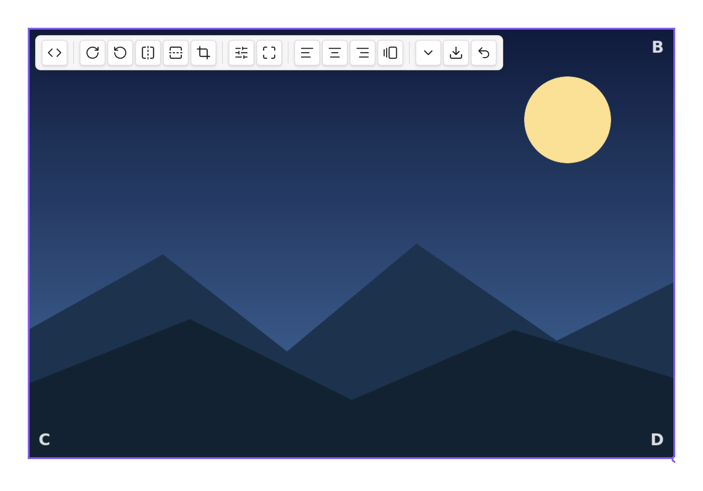
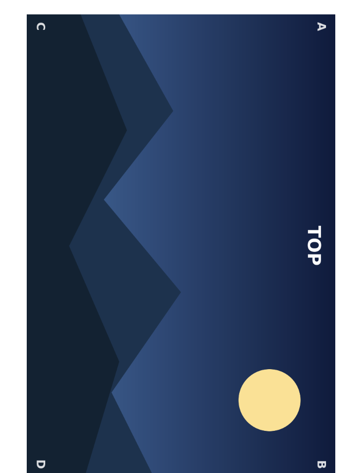
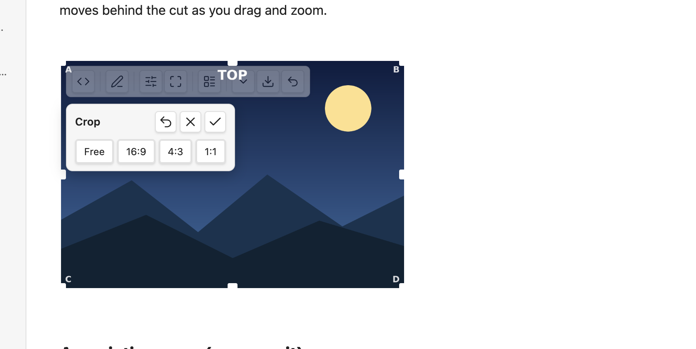
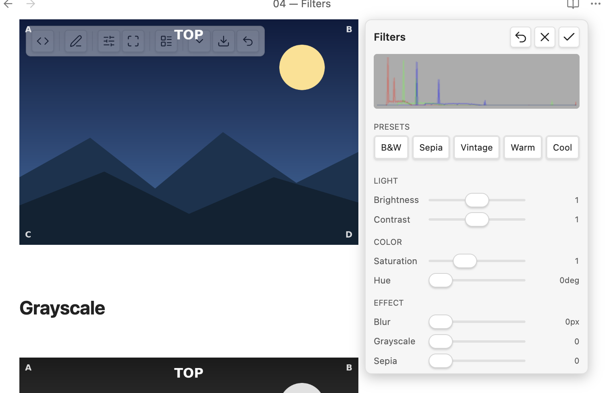
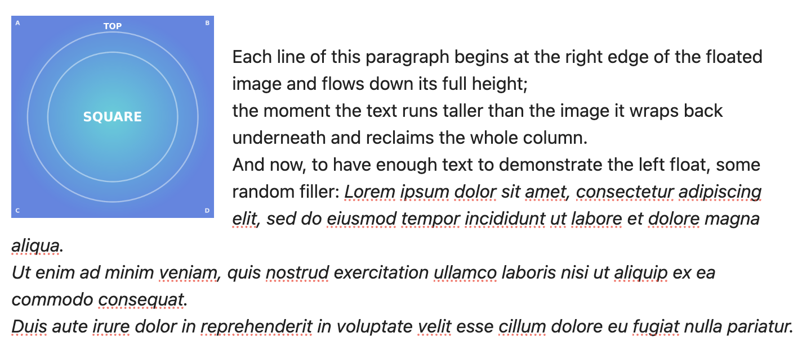
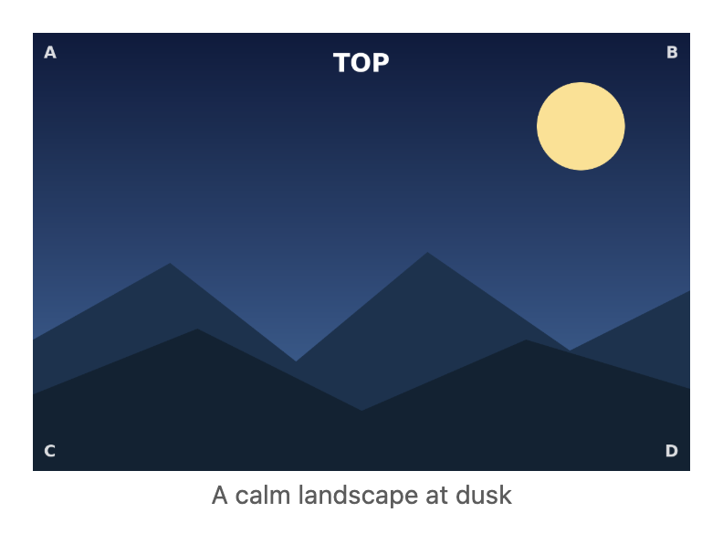

Live Image Editor — User Guide¶
Live Image Editor lets you rotate, flip, crop, resize, filter, align and export images right in your note — without ever changing the image file. Every edit is stored as a small, portable text tag on the image's own line, so your originals stay untouched and your notes stay plain Markdown.
It works in both Live Preview and Reading view, follows your Obsidian language, and follows Obsidian's central Use [[Wikilinks]] setting — it adds no link or language setting of its own.
The toolbar¶
Hover an image (or tap/click it on mobile) and a toolbar appears at the top of the image:

From left to right: show/hide the link (<>), edit the raw link, filters, crop,
layout (align / inline), size (the ⌄ menu), export, and reset. On a narrow image
the toolbar folds groups into a sub-menu and wraps so nothing is ever clipped.
A grey circle on the bottom-right corner is Obsidian's native resize handle — drag it to change the width.
Rotate & flip¶
Use the rotate buttons for quarter-turns (90° / 180° / 270°) and the flip buttons for horizontal or vertical mirroring. The image's footprint always hugs the result — a rotated image is never boxed in empty space, and never spills past your text column:

For free-angle rotation, use the rotate knob inside the crop editor (below). On a Mac trackpad you can also use the two-finger rotate gesture while cropping.
Crop¶
The crop button opens an editor in place — the image doesn't jump or reflow:

- Drag the image to pan, scroll or pinch to zoom, and use the rotate knob for free rotation. The corner handles keep the aspect ratio; the edge handles change one side.
- The aspect presets (Free, 16:9, 4:3, 1:1, …) reshape the cut window.
- Outside the cut is dimmed; inside is full.
- Reset (↺) returns to the full image; ✗ or Esc discards your changes.
- Just leave the editor (click away, press Enter, or toggle crop off) to keep the result — it's saved as a single step, so one Cmd/Ctrl-Z undoes the whole crop.
Crops stay sharp and rescale with your column — the cut is stored as a shape, not a fixed pixel size.
Size & presets¶
Drag the native handle, or open the size menu (the ⌄ button) for one-tap presets and exact width/height fields:
- Icon — shrinks the image to an inline icon that flows within your text.
- Small / Medium / Large — set the widths you configure in settings.
- Original — clears the width back to the image's natural size.
Setting a width keeps the aspect ratio; setting both a width and a height lets you stretch deliberately.
Filters¶
The filter button opens a panel with a live histogram, named presets (B&W, Sepia, Vintage, Warm, Cool) and sliders grouped by purpose:

Adjust brightness, contrast, saturation, hue, blur, grayscale, sepia; double-click a slider to reset it. Filters are a live preview while the panel is open and are saved once when you leave it. They are part of the export (below), so the exported file carries the look you see.
Layout — align, float & inline¶
The layout button toggles how the image sits in the text:

- Left / Right — the image floats and the text wraps around it (in both views).
- Center — a centered block on its own line.
- Inline — icon-sized, flowing within the line of text.
Captions¶
Turn captions on in Settings → Live Image Editor → Show image captions. The image's alt text then shows as a caption below it, rendered as Markdown (bold, italic, links, code):

The caption is centered, muted, and never wider than the image — a long caption wraps within the image width. The alt text stays the single source: edit it in the link and the caption follows.
Classes & snippets¶
The Add class button (in the layout area) offers any image CSS class it finds in your vault's enabled CSS snippets, each individually toggleable. The plugin also ships example decoration classes — rounded, shadow, bordered, circle — that you can install from settings (they're editable, and a reset restores the originals).
Export¶
The export button renders the image exactly as you see it — rotation, flip, crop and filters baked in — to a new image file at full original resolution (the display width never lowers the export quality). On desktop you get the native save dialog at the original's folder; it never overwrites silently.
Settings¶
Settings → Live Image Editor:
- Show hover toolbar — the editing toolbar on hover/selection.
- Show image captions — render alt text as a caption (off by default).
- Always show the link source — auto (reveal the raw link on hover or the cursor line) or always (reveal everywhere). Default: auto.
- Preset widths — the Small / Medium / Large widths.
- Detected snippet classes — toggle which discovered image classes are offered.
- Install / reset example snippets — the bundled decoration classes (opt-in).
- Editing-toolbar integration — optionally add the image commands to the editing-toolbar community plugin (off by default).
Commands¶
Every action is also available as a command (and through the optional editing-toolbar integration), active when an image is in context: rotate, flip, crop, the size presets, alignment, inline toggle, add class, reset, and export. Bind the ones you use to hotkeys in Settings → Hotkeys.
How edits are stored (and what happens without the plugin)¶
Each edit is written as a short tag after the image, e.g.
{rotate=90 width=420} or ![[photo.png]]{align=left}. The image file is never
modified. Open the same note without the plugin (or publish it elsewhere) and the image still
shows — width and alignment carry through anywhere, and the runtime-only effects (rotate, flip, crop,
filter) simply fall back to the original, untransformed image.